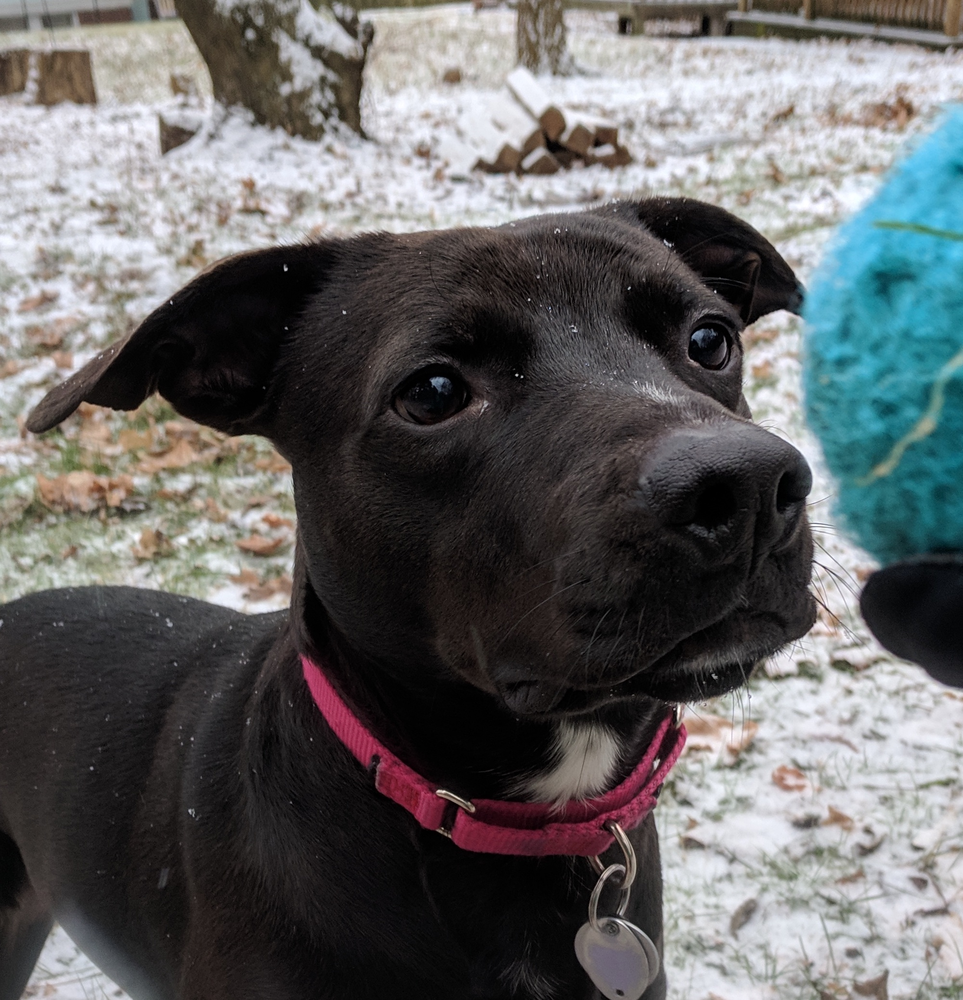

Horiseon Accessibility Refactor
In this project I overhauled an existing website's HTML and CSS to improve accessibility. This work included replacing non-semantic HTML elements
with semantic elements, refactoring elements to follow a logical structure, and adding "alt" attributes to all images. This refactor will deliver
a much better user experience for anyone accessing the site with a screen reader. It should also improve the site's search engine results, which
is crucial since the company is a digital marketing firm offering SEO.
Placeholder #1

I'm in the early stages of my programming journey and am still working on some additional portfolio pieces. Please check back soon! In the meantime,
please enjoy a photo of my beloved pit mix, Bruce.
Placeholder #2

I'm in the early stages of my programming journey and am still working on some additional portfolio pieces. Please check back soon! In the meantime,
please enjoy a photo of my beloved pit mix, Bruce.
Placeholder #3

I'm in the early stages of my programming journey and am still working on some additional portfolio pieces. Please check back soon! In the meantime,
please enjoy a photo of my beloved pit mix, Bruce.
Placeholder #4

I'm in the early stages of my programming journey and am still working on some additional portfolio pieces. Please check back soon! In the meantime,
please enjoy a photo of my beloved pit mix, Bruce.